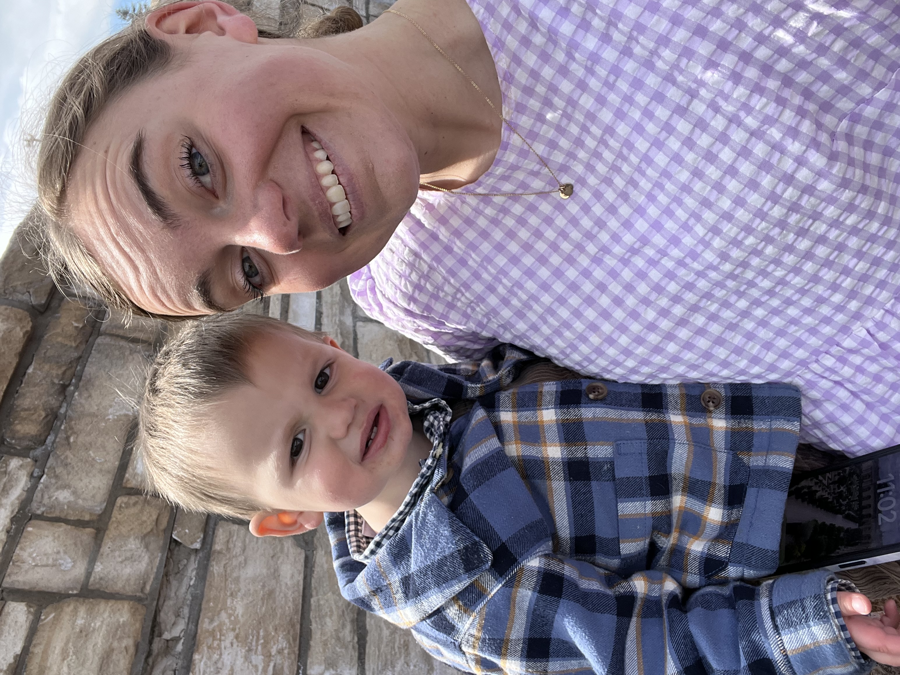

Olivia Didier
Student of Greatness
Cooking Stuff
I am a student at BYU. I am studying business things. I love steak and mashed potatoes.
Resume
Education
Degree 2020 @Corner Canyon
Skills
cooking
Experience
Teaching

"
Back to top